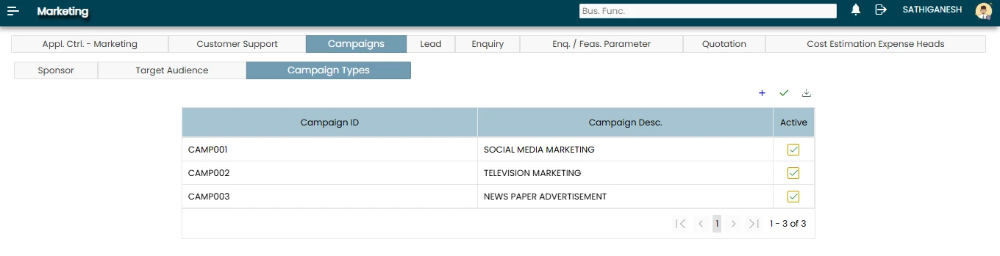

<div data-category="CRM" data-title="Campaigns Type" data-updated="December 01, 2025" data-contributors="RoadmapIT" data-breadcrumb="Home,CRM,Campaigns Type">
  <div class="page-content">
    <p>A campaign is a well-organized marketing effort designed to meet particular business goals, such as attracting potential customers, boosting sales, or enhancing brand visibility, the Campaigns types are configured in this screen.</p>
    <h5>Navigation path:</h5>
    <p class="fs-6">CRM \ Setup \ Setup-Marketing \ Campaign \ Campaign Types</p>
    
    <ul style="list-style-type: none; align-content: center">
      <li class="mouse-icon">Click on <i class="bi bi-plus fs-4 mx-2 text-primary"></i> button</li>
      <li class="mouse-icon">Enter the Campaigns id</li>
      <li class="mouse-icon">Enter the Campaigns Description</li>
      <li class="mouse-icon">Select the Active flag if the Campaign is to be used in transactions</li>
      <li class="mouse-icon">Click <i class="bi bi-check-lg fs-4 mx-1 text-success"></i> to save</li>
    </ul>
  </div>
</div>
